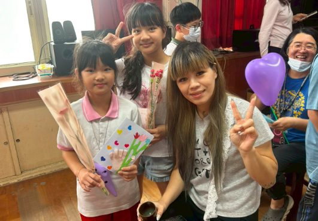
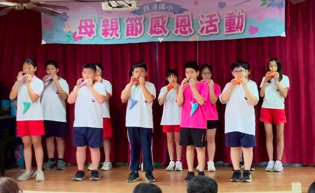
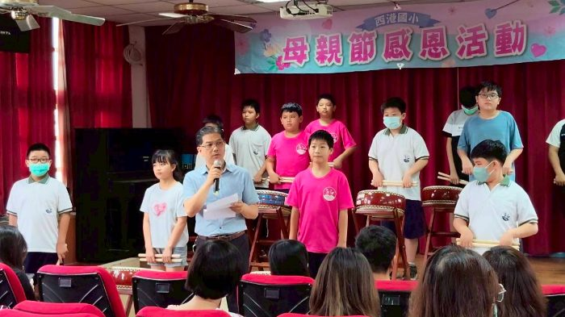
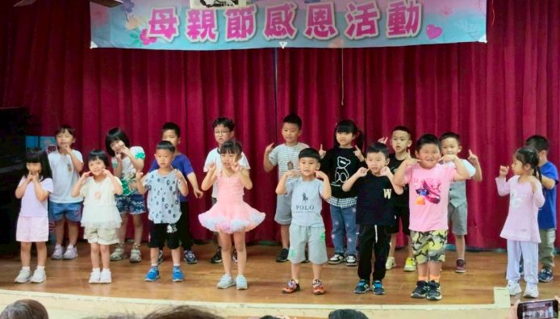
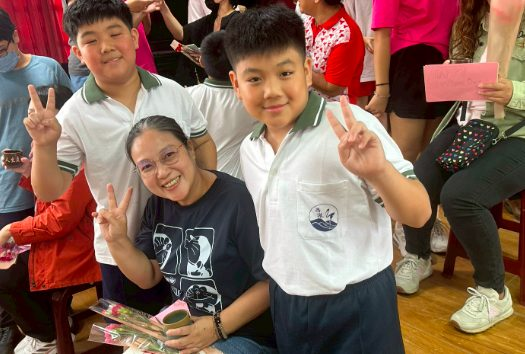
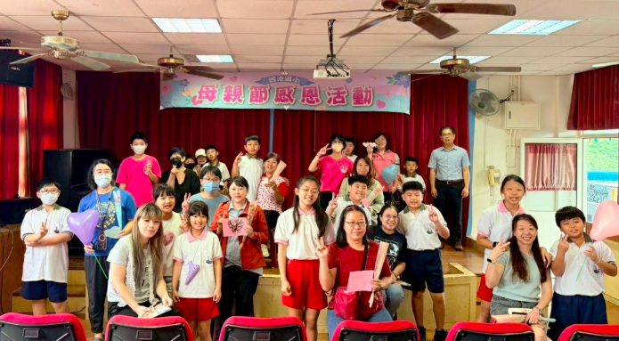
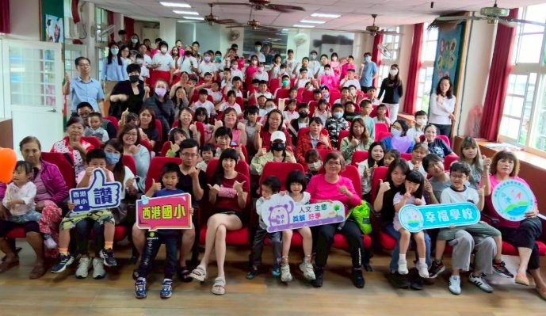

A May Full of Gratitude
The May campus brimmed with love and gratitude. To welcome Mother's Day, the school invited parents into the schoolyard to feel the heart of every child up close. 五月的校園洋溢著愛與感恩。為迎接母親節，本校邀請家長走進校園，一同感受孩子們滿滿的心意。
The day opened with vibrant performances — sixth-grade taiko, preschool dance, and Grades 2–5 ocarina — each piece carrying a thank-you to the mothers and grandmothers in the audience. 活動在熱鬧的表演中展開，六年級太鼓、幼兒園舞蹈，以及二至五年級陶笛演奏，傳遞對媽媽與阿嬤的感謝。
Children offered handmade cards and carnations, and in a quiet tea ceremony they whispered "thank you for everything." A hug, a careful back-pat, a small massage — every gesture a real and unguarded love. 孩子們親手獻上卡片與康乃馨，並在溫馨的奉茶儀式中輕聲說出「您辛苦了」。一個擁抱、一份貼心的捶背與按摩，都是最真摯的愛。
The morning closed in warmth and tears alike. Wishing every mother a happy Mother's Day. 在感動的氛圍中，活動圓滿落幕。祝福所有媽媽母親節快樂！






